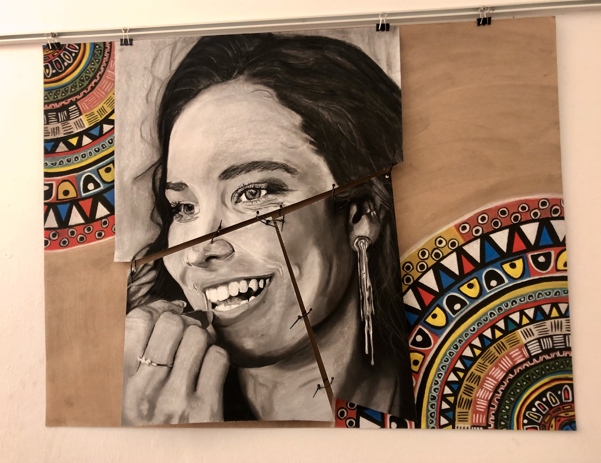

Denim #1
Denim #2
Denim #3
Denim #4

Fractured Identity #1

Fractured Identity #2

Fractured Identity #3

Fractured Identity #4

Ouma
Changing of time

Immersive Journey
Incomplete Truth
Incomplete Truth

The Truth

The Truth

The Truth
Browse my collection of charcoal and mixed-media works.
"Even broken things can become beautiful again."
- A denim skirt transformed with hand-painted floral patterns, celebrating how worn clothing can be reborn as vibrant art. -
"Even broken things can become beautiful again."
- Denim jeans with embroidered flowers, resembling a pocket full of posies — a symbol of turning old, frayed fashion into beauty. -
"Even broken things can become beautiful again."
- An embroidered Apple symbol sits on repurposed denim, merging modern tech with sustainability and creative reuse. -
"Even broken things can become beautiful again."
- These jeans feature bleach bubble patterns that breathe playful new life into forgotten fabric — a testament to denim's second chances. -
Using a mirror and different techniques to create several self-portrait pieces. Each piece captures a different technique and version of who I am - or who I've been - in moments of clarity, doubt, strength, and weakness. By shifting techniques, I allow myself to shift perspectives. These pieces are of how I feel about being me - fluid, evolving, and whole.
CloseUsing a mirror and different techniques to create several self-portrait pieces. Each piece captures a different technique and version of who I am - or who I've been - in moments of clarity, doubt, strength, and weakness. By shifting techniques, I allow myself to shift perspectives. These pieces are of how I feel about being me - fluid, evolving, and whole.
CloseUsing a mirror and different techniques to create several self-portrait pieces. Each piece captures a different technique and version of who I am - or who I've been - in moments of clarity, doubt, strength, and weakness. By shifting techniques, I allow myself to shift perspectives. These pieces are of how I feel about being me - fluid, evolving, and whole.
CloseUsing a mirror and different techniques to create several self-portrait pieces. Each piece captures a different technique and version of who I am - or who I've been - in moments of clarity, doubt, strength, and weakness. By shifting techniques, I allow myself to shift perspectives. These pieces are of how I feel about being me - fluid, evolving, and whole.
CloseMy role model.
My hero.
My grandma.
My grandmother has always been a quiet force in my life. Her presence is grounding and her stories are rich in wisdom and love. This piece is in a way holding her still in time, even as time moves forward. This is my tribute to her, and to the generations she carries within her and those to come.
"Changing of Time” is a series of four paintings, each representing a different time of year—but more deeply, they reflect how our senses are shaped and often clouded by our environment. The work challenges us to question what we see, hear, and believe—reminding us that we often perceive not the truth, but what others want us to see. It is a meditation on perception, distraction, and the search for clarity amidst noise.
CloseFrom cotton to denim to fashion to recycling. The journey is both immersive and complex. A journey of a denim garment. This is a fabric of grit. A symbol of resilience and wear. In a way, it echoes our own experiences and life journeys. Every crease, rip, and thread tells a story. This is called an immersive journey.
CloseThe blank spaces highlight the struggle of never fully grasping the full truth. It is always INCOMPLETE... this piece is a take on not feeling what is true, not seeing what is pure and truthful, not speaking what is true, and not hearing the truth. We tend to feel, see, speak, and hear what society says is true; we must lean on what is right and true in our hearts.
CloseThe blank spaces highlight the struggle of never fully grasping the full truth. It is always INCOMPLETE... this piece is a take on not feeling what is true, not seeing what is pure and truthful, not speaking what is true, and not hearing the truth. We tend to feel, see, speak, and hear what society says is true; we must lean on what is right and true in our hearts.
CloseThe whole truth. Combining everyone’s truth to create the ultimate truth. This drawing is part of learning to understand who I am. It is not always a beautiful or perfect story, yet it is the truth—Whole Truth—of who I am. This is me.
CloseThe whole truth. Combining everyone’s truth to create the ultimate truth. This drawing is part of learning to understand who I am. It is not always a beautiful or perfect story, yet it is the truth—Whole Truth—of who I am. This is me.
CloseThe whole truth. Combining everyone’s truth to create the ultimate truth. This drawing is part of learning to understand who I am. It is not always a beautiful or perfect story, yet it is the truth—Whole Truth—of who I am. This is me.
Close